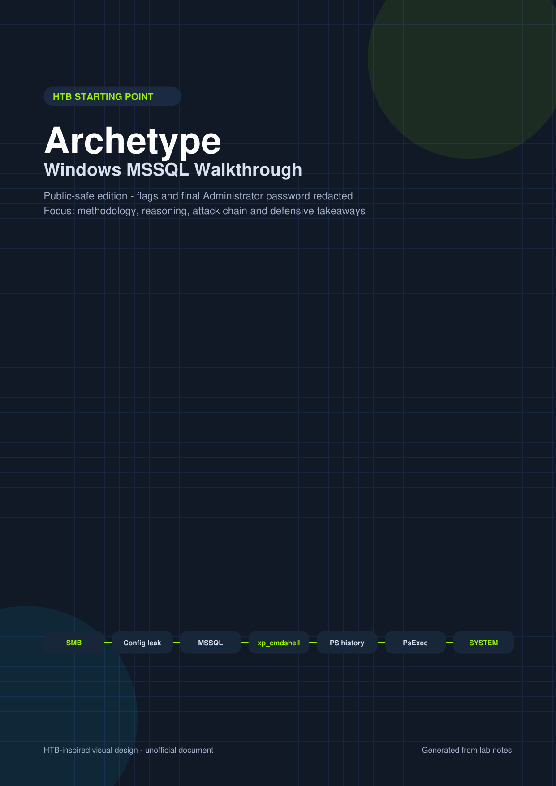

Hack The Box - Starting Point - FR
Archetype
Ce walkthrough en français axé sur la methodologie:
Énumeration SMB, accès MSSQL, xp_cmdshell, historique PowerShell et PsExec.
Pensé pour aider la communauté.

Chaine d'attaque
1. Énumeration SMB - accès anonyme au partage
backups.2. Decouverte d'identifiants -
prod.dtsConfig expose des identifiants MSSQL.3. Accès MSSQL - le compte de service possede le role sysadmin SQL Server.
4. Éxecution de commandes -
xp_cmdshell permet d'executer des commandes Windows.5. Escalade - l'historique PowerShell contient un mot de passe Administrator.
6. Shell SYSTEM - PsExec utilise les identifiants admin via SMB.
Ce que ce writeup démontre
Méthode
Reconnaissance, énumeration de service, validation d'identifiants, exploitation puis escalade.
Windows
SMB, MSSQL, historique PowerShell, execution de commandes et services distants.
Défense
Chaque etape offensive est reliee a une mitigation concrete et utile en entreprise.
Commandes clés
smbclient -L //$TARGET -U guest%
mssqlclient.py ARCHETYPE/sql_svc:'PASSWORD'@$TARGET -windows-auth
SELECT IS_SRVROLEMEMBER('sysadmin');
EXEC sp_configure 'xp_cmdshell', 1;
EXEC xp_cmdshell 'whoami';
psexec.py administrator:'REDACTED'@$TARGET